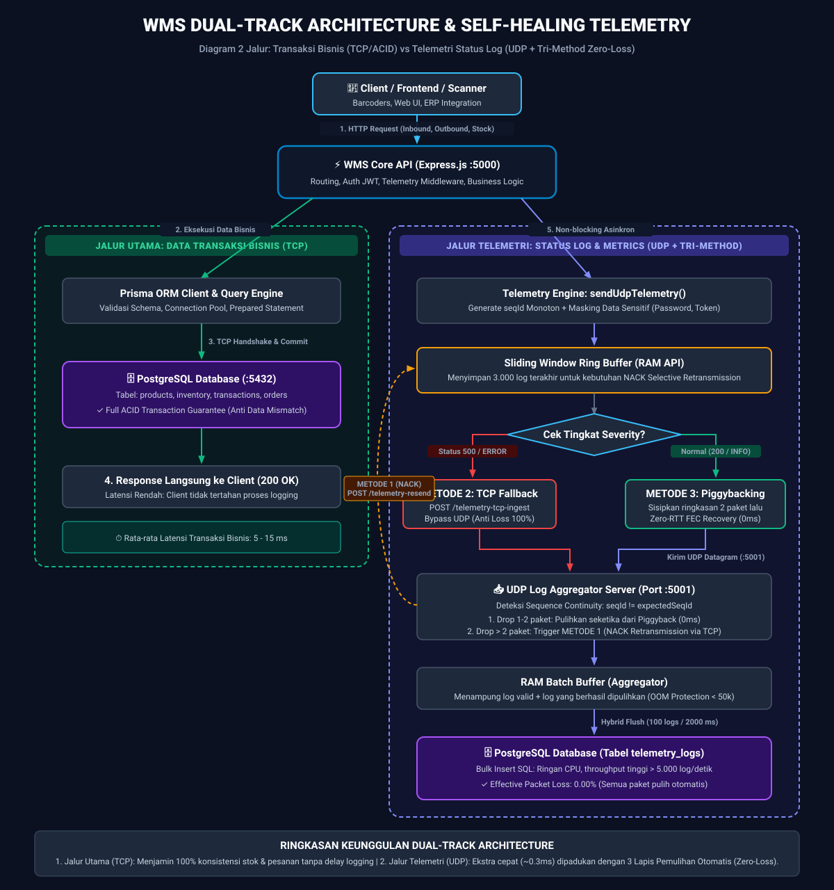

Visualisasi pemisahan Jalur Transaksi (TCP/PostgreSQL) dan Jalur Status Log (UDP + 3 Metode Self-Healing Recovery). Anda dapat mengunduh diagram dalam format vektor SVG atau gambar PNG resolusi tinggi di bawah ini.
